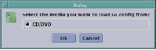

- 00000018WIA301C1130GYZ
- id_152710843.13
- Jun 20, 2025, 5:58:51 PM
Load from Cold (MP24)
Prerequisites
| Personnel requirements | |||
|---|---|---|---|
| Required persons | Preliminary requirements | Procedure | Finalization |
| 1 | 10 minutes | 4 hours | Not Applicable |
| Tools and test equipment | ||||
|---|---|---|---|---|
| Item | Quantity | Effectivity | Part number | Manufacturer |
| Service Pack CD/DVD (if required) | 1 | - | - | - |
| PET/MR Software Collector | 1 Set | - |
See FRU | - |
| Required conditions | ||
|---|---|---|
| Condition | Reference | Effectivity |
|
Archive images using site procedures; use Scan Data Manager to save PET raw data. | - | all PET/MR Systems |
|
PET/MR software installation uses the English language. An international keyboard cannot be used until after keyboard and language settings are configured, and the system is rebooted for the first time. | - | - |
About this task
Overview
IMPORTANT: Make sure that the latest Service Pack is loaded. See the latest revision of MR Service Pack Software Matrix, DOC1667089, available from the online documentation library.
If more information is needed for how to load Service Packs, refer to Installing Software Updates.
This procedure details a Load from Cold (LFC) software installation on:
-
Newly installed SIGNA PET/MR Systems,
-
Systems upgraded from a Discovery MR750w to a SIGNA PET/MR System,
-
Whenever LFC needs to be performed on a PET/MR System after repairs or maintenance.
For existing PET/MR systems
Procedure
Loading Operating System (OS) software
Procedure
Loading MR Applications software
Procedure
- Insert the MrpApps DVD and click OK on
the Alert message.
Figure 2. Alert message 
When the Select your Locale screen displays, select the appropriate language for the locale, choose Set as default, and click OK.Notice Figure 5. Locale language screen 
- When the message Select the media you want to load
GI config from? displays, proceed to either Step a or b,
depending on the applicable situation.
-
(For an existing PET/MR system) Proceed as follows:
-
Insert the SaveInfo disk created earlier, and click OK. (SaveInfo configuration will take less than one minute.)
-
When the message Loading configuration from media Done displays at the bottom of the Guided Install screen, press the disk eject button on the computer to remove the SaveInfo disk, and close the xmessage shown in Guided install configuration in progress message.
-
- (For a new PET/MR installation or an upgrade from an MR750w system) Proceed to System and hardware configuration.
- Select Verification (last entry in the
left navigation pane) on the Guided Install screen,
then click the Install Software button.
-
Make sure that the Status of all changed values indicates Pass.
-
Correct any values indicated as Fail.
NoteDo not use network 192.x.x.x for the Host IP address. Doing so will prevent the PET from working.
Figure 7. Verifying changes passed 
-
Figure 8. Media to load selection 
-
(For an existing PET/MR system) Proceed as follows:
Loading PET Applications software
Procedure
- In Guided Install, select PET Configuration, and click Install PET.
Figure 10. Beginning the PET installation 
- NoteWhen Please insert a PET Apps DVD displays, insert the pet_everest.xx DVD, and click OK.
There is no indication the software is installing (system may appear to be locked), but installation takes about three minutes.
Figure 11. Insert the PET DVD message 
DANGER 
In Guided Install, select PET Phantom Configuration (1) and enter the Annulus Phantom details on this screen.Notice - For Activity (MBq), type the activity value (2) from the label on the Annulus Phantom.
Figure 14. Annulus Phantom label details 
- For Phantom Serial Number, type the serial no. (3) from the label on the Annulus Phantom.
- For Phantom Measured Date, type the calibration date (4) from the label on the Annulus Phantom.
- Click the Configure button (5) to save the entries.
- When the next message window displays, click OK.
Figure 15. PET Successfully Installed message 
Figure 16. PET Phantom Configuration values 
- For Activity (MBq), type the activity value (2) from the label on the Annulus Phantom.
Running RestoreInfo Utility
About this task
SaveInfo takes about three minutes, and restores all files if they were saved off the system.
-
If PET/MR SaveInfo disk does not exist, proceed to Loading Volume Reconstruction Engine (VRE) OS Software. Do not use the MR750w SaveInfo disk on a PET/MR system.
-
Proceed as follows if a PET/MR SaveInfo disk exists:
Procedure
- In Guided Install, select Utilities > Save/Restore, and click the Restore Information button.
- When Select the media you want to Restore Information? displays, insert the SaveInfo disk and click OK.
- When Do you really want to do Restore Info? displays, select Restore all files automatically, and click Continue.
- When After upgrading to new software you MUST run update utility displays, click OK.
- When the Restore Manager displays, select All, and click Update.
- When each message below displays, proceed as directed:
- Update is complete., click Quit.
- Do you want to quit the tool?, click Yes.
- Log file (restore.log) has been created …, click OK.
- Press the disk eject button on the computer to remove the SaveInfo disk.
Loading Volume Reconstruction Engine (VRE) OS Software
Procedure
- When Please insert the VRE OS disk and click OK displays, insert the VRE OS DVD, and click OK. (Installation takes approximately 35 minutes.)
Figure 19. Insert VRE OS Disk message 
- When the two VRE configuration successfully completed! messages display, click OK on each.
Figure 20. VRE Configuration Completed 
Loading PARC Software
Procedure
- In Guided Install, select PET Configuration, and click the Configure PARC button.
Figure 21. PET Configuration for PARC  Note
NoteWhen PARC configuration is performed as part of a post-installation service, PET raw data stored on the PARC is preserved, and the message below will not display.
- When the message PARC configuration will erase data
on PARC. Do you want to continue? displays, click Yes.
Figure 22. PARC Configuration Message 
- It takes two to three minutes for the system to request the
Q.Core/PARC setup disk. When prompted, insert this disk into the drive
and click Continue.
Figure 23. Q.Core/PARC Setup Message 
- When prompted, Please remove the optical media from
the drive, remove the DVD and click Continue.
Figure 24. Prompt to Remove Media 
- When PARC configuration successfully completed! displays, click OK.
Figure 25. PARC Configuration Completed 
Installing In Room Monitor (IRM) Software
Procedure
- In Guided Install, select IRM Installation and click the Install IRM Software button.
- When IRM Software Package is installed on this system displays, click OK.
Loading MR Service Software
Procedure
Running RestoreInfo Utility
About this task
This section applies to software upgrades when SaveInfo media is available. Do not use the MR750w SaveInfo on a PET/MR system.
-
If a PET/MR SaveInfo disk does not exist because of a new installation or a hardware upgrade, proceed to Loading Operator Manual.
-
Refer to Running RestoreInfo Utility to use the RestoreInfo Utility.
Loading Operator Manual
Procedure
- Insert the Operator Manual disk into the DVD drive.
- In Guided Install, select Service SW/Insite from the left navigation pane, and click the Install Online Help button.
- Calibrate the LCD Monitor, referring to LCD Monitor Screen Adjustments.
- Select the appropriate language and click Install.
- When installation is complete, click Cancel and remove the DVD from the drive.
Finalization
Finalization
-
IMPORTANT: Make sure that the latest Service Pack is loaded. See the latest revision of MR Service Pack Software Matrix, DOC1667089, available from the online documentation library.
-
If more information is needed for how to load Service Packs, refer to Installing Software Updates.
-
Reboot the computer and login as sdc, with password adw2.0.
-
Perform a connectivity check by pinging the Internet Protocol (IP) address of a connected device or the Network Interface Card (NIC) in a C-shell window. (The NIC IP address is 127.0.0.1.)
-
If this is a first-time software installation and no previous calibration data exists, then run these calibrations:
-
MR calibrations found in the SIGNA PET/MR System Service Methods DVD, Direction 5490579-x under Adjustments/Calibrations.
-
PET calibrations found in the SIGNA PET/MR System Service Methods DVD, Direction 5490579-x under Adjustments/Calibrations > PET-MR.
-
-
If this is a software reload of a working system, perform the following: